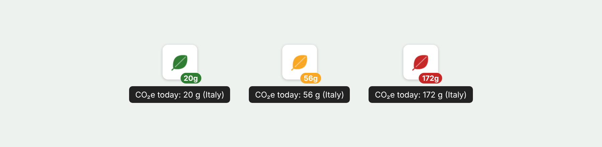
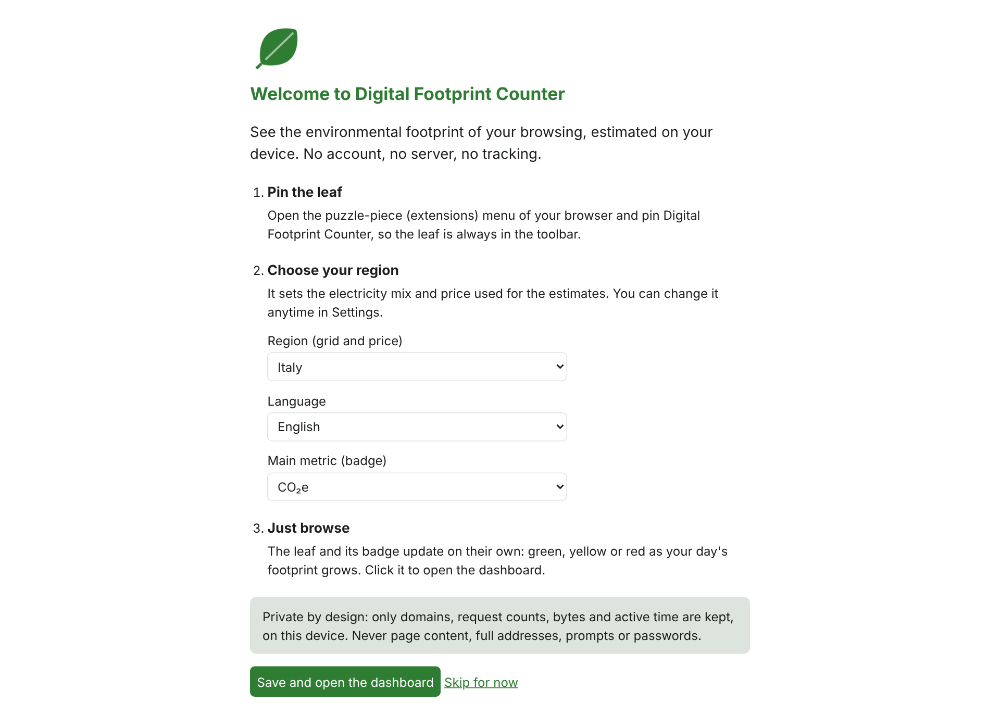
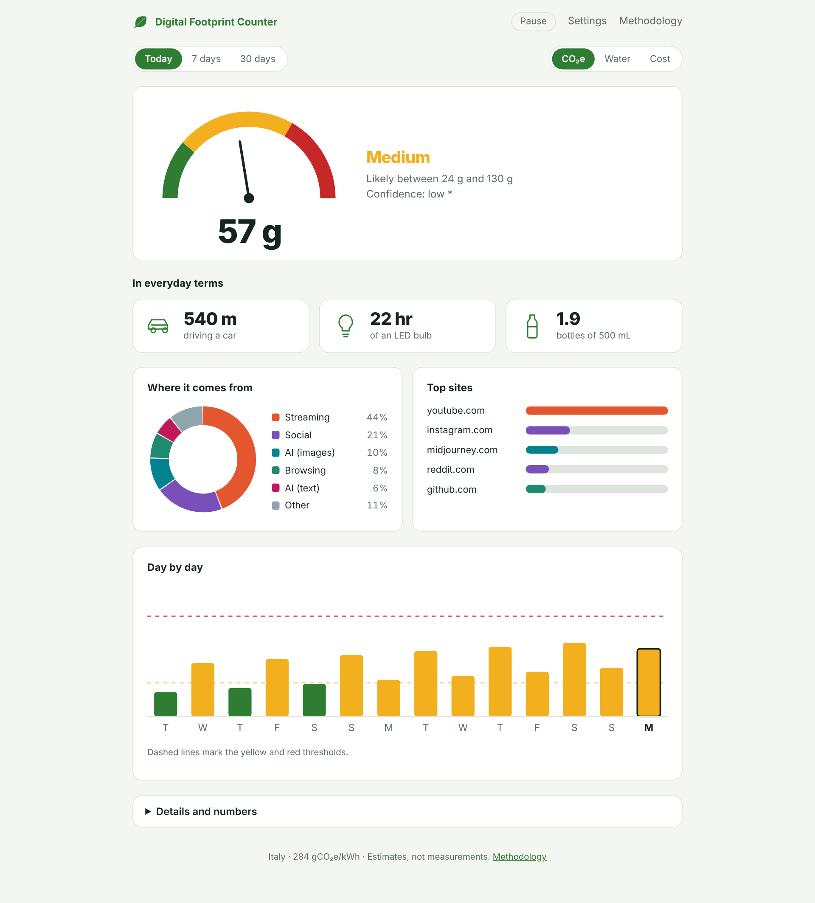
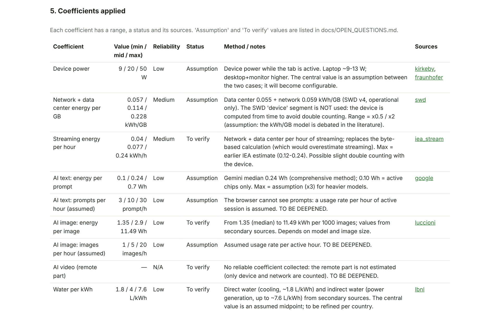
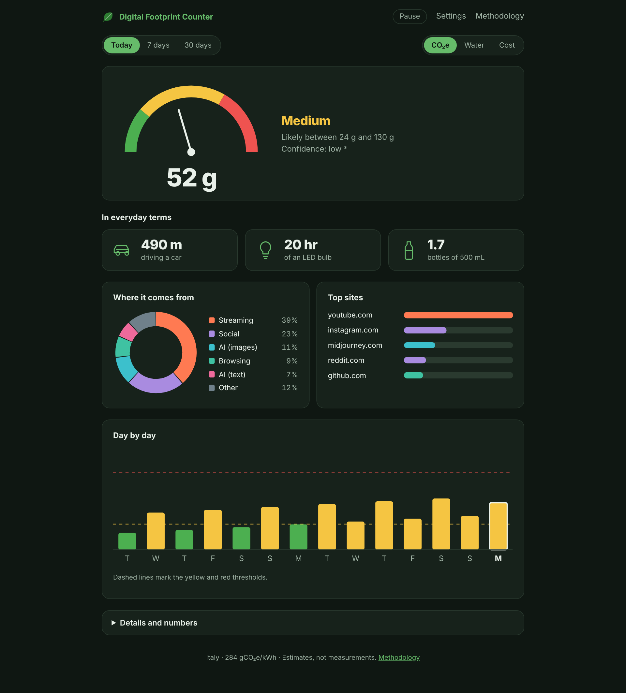
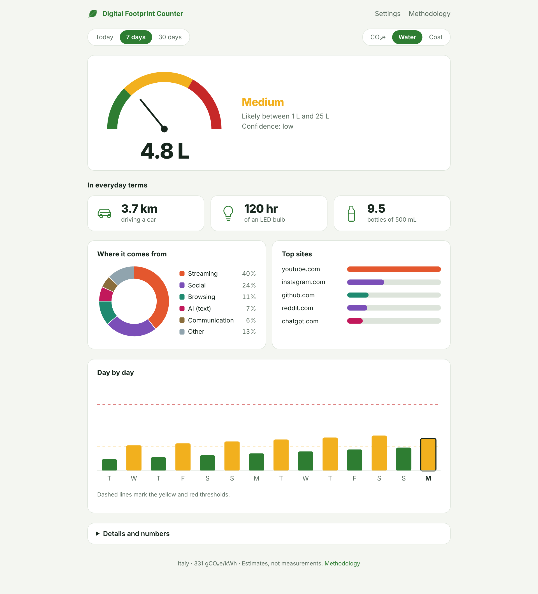

Free browser extension · Open source · No account
A small leaf in your toolbar estimates the energy, CO₂e and water behind what you do online. Everything is calculated on your device, and every number shows its range, its sources and its assumptions.

Three promises
No account, no server, no telemetry. Only a domain, request count, bytes and active time are kept, on your device.
Browsers cannot see server consumption, so the extension never pretends to measure. Each estimate carries its reliability level.
Its own footprint, estimated from a first measurement of CPU use. To be repeated on real laptops.
From install to insight
On first run a welcome page asks for a region, a language and the metric to show. The region sets the electricity mix and price: Italy by default, plus EU, USA, China, Japan and the world average. Every value can be overridden.

The leaf turns green, yellow or red as the day's footprint grows, and the badge shows the figure in the metric you chose: CO₂e, water or cost. Thresholds are adjustable and are not presented as a scientific standard.
One click on the leaf opens a visual dashboard: a gauge for the day, what it equals in everyday terms (metres by car, hours of an LED bulb), where it comes from, and a day-by-day trend. Numbers and tables stay one click away.

The Methodology page is built from the same files the engine uses. Every coefficient lists its range, status (sourced, to verify or assumption) and links to its source.

Light, dark, any metric


The interface follows the system theme. Switch between today, 7 and 30 days, and between CO₂e, water and cost.
One number, explained
An example from the demo dashboard: a laptop, the Italian profile. Every line maps to a row in the Methodology page.
What it cannot know
to verify or assumption, and listed publicly.Privacy
| Kept on your device | Never collected |
|---|---|
| Domain · number of requests · bytes · active time, per day, for 90 days | Page content · full addresses · prompts · cookies · passwords · any personal data |
Permissions are limited to observing requests (read-only), idle detection, local storage and a one-minute alarm. The extension's own security policy forbids any connection except to its own files, so it cannot send data out. You can pause tracking, exclude sites, choose how long data is kept (7, 30 or 90 days), export everything as a CSV, or delete it all. Private windows are never tracked. For AI services you can optionally count how many messages you send, only as a number, to replace an assumed rate with real usage.
Open source